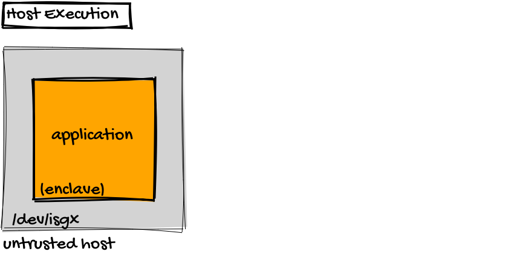

Host Execution¶
We now show how one can compile a simple hello world program in a container and how to execute the program in the container in simulation mode and on the host in hardware mode.

Installation¶
In this example, we assume that you run on a host and have installed the Intel SGX driver and a docker engine. Driver installation is not strictly necessary: without the driver, the program will be automatically be executed in simulation mode on the host.
Detailed Description¶
We first need to start a container which includes the SCONE crosscompiler which is based on Ubuntu1:
docker run -it -v "$PWD":/src sconecuratedimages/crosscompilers:ubuntu
We map the local directory of the host into the container (via option -v) to be able to executed the generated binary on the host.
Now execute the following command inside the container to create the hello world program:
cd /src cat > helloworld.c << EOF #include <stdio.h> int main() { printf("Hello World\n"); } EOF
Compile the program with:
gcc -o helloworld helloworld.c
You can run this program with some debug output in the container:
SCONE_VERSION=1 ./helloworld
This will print something like:
export SCONE_QUEUES=4 export SCONE_SLOTS=256 export SCONE_SIGPIPE=0 export SCONE_MMAP32BIT=0 export SCONE_SSPINS=100 export SCONE_SSLEEP=4000 export SCONE_KERNEL=0 export SCONE_HEAP=67108864 export SCONE_STACK=81920 export SCONE_CONFIG=/etc/sgx-musl.conf export SCONE_MODE=sim export SCONE_SGXBOUNDS=no export SCONE_VARYS=no export SCONE_ALLOW_DLOPEN=no export SCONE_MPROTECT=no Revision: 73cd5e415623f0947d635cad861d09bf364ce778 (Fri Jun 1 17:57:15 2018 +0200) Branch: master Configure options: --enable-shared --enable-debug --prefix=/mnt/ssd/franz/subtree-scone2/built/cross-compiler/x86_64-linux-musl Enclave hash: 2805aa551a1019d86f33b6f14774a18792a5a3cc483d002782c9d851d851bf5a Hello World
The output shows that SCONE is running in simulation mode: "export SCONE_MODE=sim"
Note
Our patched docker engine automatically maps the sgx device inside of containers. In this case, the program would actually be executed in hardware mode.
Execution on host¶
Now, exit the container by executing:
exit
On the host, you can now execute the generated helloworld program2. First, we need to ensure that there exists a SCONE configuration file. We store this in the local directory:
cat > sgx-musl.conf << EOF Q 1 e -1 0 0 s -1 0 0 EOF
Now, we start the program with debug messages and using the configuration file in the local directory:
SCONE_CONFIG="$PWD"/sgx-musl.conf SCONE_VERSION=1 ./helloworld
In case your host has the Intel sgx driver installed, the output will show that it is executed in hardware mode on the host:
... export SCONE_MODE=hw ... Enclave hash: 2805aa551a1019d86f33b6f14774a18792a5a3cc483d002782c9d851d851bf5a Hello World
If you do not have the sgx driver installed, the program runs in simulation mode.
© scontain.com, August 2018. Questions or Suggestions?